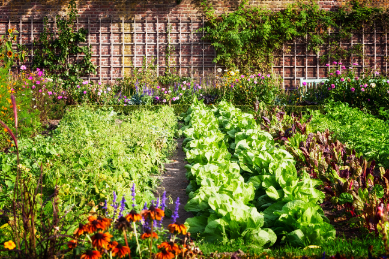
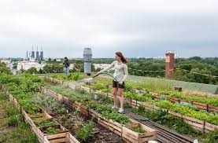

In recent years, urban gardening has emerged as a powerful movement, transforming concrete jungles into vibrant green spaces. This practice involves cultivating plants in urban areas, utilizing spaces such as rooftops, balconies, community gardens, and even vertical gardens. Urban gardening not only adds aesthetic appeal to cities but also contributes to environmental sustainability and community well-being. By reclaiming unused or underutilized spaces, urban gardening mitigates the urban heat island effect, improves air quality, and provides habitats for local wildlife.
One of the key benefits of urban gardening is its potential to increase access to fresh, nutritious produce in densely populated areas. In food deserts—areas where access to affordable, healthy food is limited—urban gardens can serve as sources of fresh fruits, vegetables, and herbs. Community gardens, in particular, foster a sense of ownership and cooperation among residents, promoting social cohesion and healthy eating habits. Additionally, urban gardening promotes food security by reducing reliance on industrial agriculture and long-distance food transportation, thus making cities more resilient to disruptions in the global food supply chain.
Moreover, urban gardening offers opportunities for education and skill-building, especially in underserved communities. By engaging in hands-on activities such as planting, watering, and harvesting, people of all ages can learn about plant biology, environmental stewardship, and sustainable living practices. Schools, community centers, and non-profit organizations often integrate urban gardening into their curriculum or programming to empower individuals with practical knowledge and promote environmental consciousness. Furthermore, urban gardening projects provide valuable vocational training and employment opportunities, particularly for marginalized groups, fostering economic empowerment and self-sufficiency.
In addition to its environmental and socio-economic benefits, urban gardening fosters a deeper connection between city dwellers and the natural world. Amidst the hustle and bustle of urban life, tending to plants offers moments of tranquility and mindfulness. Many people find solace in nurturing green spaces, whether it's through container gardening on their apartment balconies or participating in communal gardening events. This reconnection with nature not only enhances mental health and well-being but also instills a sense of responsibility towards the environment and future generations.
In conclusion, urban gardening represents a holistic approach to sustainable urban development, addressing various interconnected challenges such as food insecurity, environmental degradation, and social isolation. By transforming urban landscapes into flourishing ecosystems, this practice promotes ecological resilience, social equity, and individual well-being. As cities continue to grow and evolve, urban gardening will play an increasingly vital role in creating healthier, more vibrant communities for all.